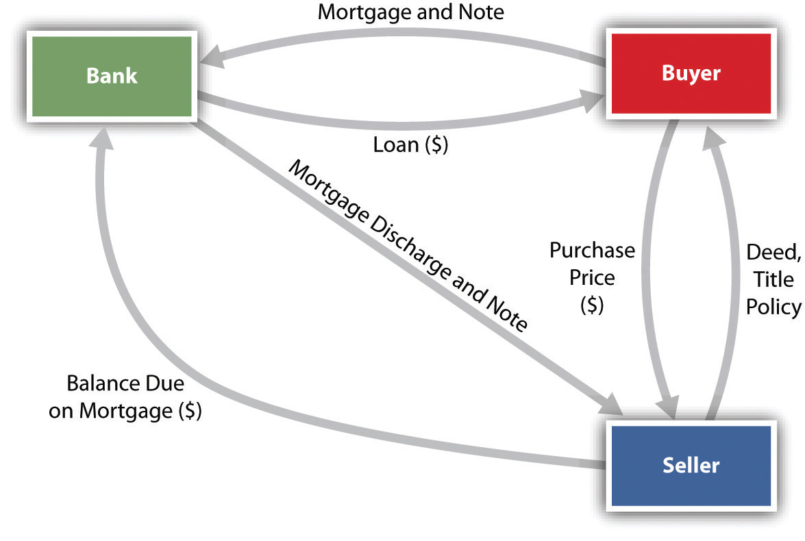

Once the buyer (or buyers) knows what form of ownership is most desirable, the search for a suitable property can begin. This search often involves contact with a broker hired by the seller. The seller’s contract with the broker, known as the listing agreementAn agreement between the owner of real property and a real estate broker., is the first of the series of contracts in a typical real estate transaction. As you consider these contracts, it is important to keep in mind that despite the size of the transaction and the dire financial consequences should anything go awry, the typical person (buyer or seller) usually acts as his or her own attorney. An American Bar Association committee has noted the following:
It is probably safe to say that in a high percentage of cases the seller is unrepresented and signs the contracts of brokerage and sale on the basis of his faith in the broker. The buyer does not employ a lawyer. He signs the contract of sale without reading it and, once financing has been obtained, leaves all the details of title search and closing to the lender or broker. The lender or broker may employ an attorney but, where title insurance is furnished by a company maintaining its own title plant, it is possible that no lawyer, not even house counsel, will appear.
This being so, the material that follows is especially important for buyers and sellers who are not represented in the process of buying or selling real estate.
Real estate brokers, and the search for real estate generally, are subject to state and federal government regulation. Every state requires real estate brokers to be licensed. To obtain a license, the broker must pass an examination covering the principles of real estate practice, transactions, and instruments. Many states additionally insist that the broker take several courses in finance, appraisal, law, and real estate practice and apprentice for two years as a salesperson in a real estate broker’s office.
Two federal civil rights laws also play an important role in the modern real estate transaction. These are the Civil Rights Act of 1866 and the Civil Rights Act of 1968 (Fair Housing Act). In Jones v. Alfred H. Mayer Co.,Jones v. Alfred H. Mayer Co., 392 U.S. 409 (1968). the Supreme Court upheld the constitutionality of the 1866 law, which expressly gives all citizens of the United States the same rights to inherit, purchase, lease, sell, hold, and convey real and personal property. A minority buyer or renter who is discriminated against may sue for relief in federal court, which may award damages, stop the sale of the house, or even direct the seller to convey the property to the plaintiff.
The 1968 Fair Housing Act prohibits discrimination on the grounds of race, color, religion, sex, national origin, handicap, or family status (i.e., no discrimination against families with children) by any one of several means, including the following:
However, the 1968 act contains several exemptions:
Sale or rental of a single-family house if the seller
The net impact of these laws is that discrimination based on color or race is flatly prohibited and that other types of discrimination are also barred unless one of the enumerated exemptions applies.
When the seller hires a real estate broker, he will sign a listing agreement. (In several states, the Statute of Frauds says that the seller must sign a written agreement; however, he should do so in all states in order to provide evidence in the event of a later dispute.) This listing agreement sets forth the broker’s commission, her duties, the length of time she will serve as broker, and other terms of her agency relationship. Whether the seller will owe a commission if he or someone other than the broker finds a buyer depends on which of three types of listing agreements has been signed.
If the seller agrees to an exclusive-right-to-sellIf the seller agrees to an exclusive-right-to-sell agency, he will owe the broker the stated commission regardless of who finds the buyer. agency, he will owe the broker the stated commission regardless of who finds the buyer. Language such as the following gives the broker an exclusive right to sell: “Should the seller or anyone acting for the seller (including his heirs) sell, lease, transfer, or otherwise dispose of the property within the time fixed for the continuance of the agency, the broker shall be entitled nevertheless to the commission as set out herein.”
Somewhat less onerous from the seller’s perspective (and less generous from the broker’s perspective) is the exclusive agencyThe broker has the exclusive right to sell and will be entitled to the commission if anyone other than the seller finds the buyer (in other words, the seller will owe no commission if he finds a buyer).. The broker has the exclusive right to sell and will be entitled to the commission if anyone other than the seller finds the buyer (i.e., the seller will owe no commission if he finds a buyer). Here is language that creates an exclusive agency: “A commission is to be paid the broker whether the purchaser is secured by the broker or by any person other than the seller.”
The third type of listing, relatively rarely used, is the open listing, which authorizes “the broker to act as agent in securing a purchaser for my property.” The open listingCalls for payment to the broker only if the broker was instrumental in finding the buyer; the broker is not entitled to her commission if anyone else, seller or otherwise, locates the buyer. calls for payment to the broker only if the broker was instrumental in finding the buyer; the broker is not entitled to her commission if anyone else, seller or otherwise, locates the buyer.
Suppose the broker finds a buyer, but the seller refuses at that point to sell. May the seller simply change his mind and avoid having to pay the broker’s commission? The usual rule is that when a broker finds a buyer who is “ready, willing, and able” to purchase or lease the property, she has earned her commission. Many courts have interpreted this to mean that even if the buyers are unable to obtain financing, the commission is owed nevertheless once the prospective buyers have signed a purchase agreement. To avoid this result, the seller should insist on either a “no deal, no commission” clause in the listing agreement (entitling the broker to payment only if the sale is actually consummated) or a clause in the purchase agreement making the purchase itself contingent on the buyer’s finding financing.
Once the listing agreement has been signed, the broker becomes the seller’s agent—or, as occasionally happens, the buyer’s agent, if hired by the buyer. A broker is not a general agent with broad authority. Rather, a broker is a special agent with authority only to show the property to potential buyers. Unless expressly authorized, a broker may not accept money on behalf of the seller from a prospective buyer. Suppose Eunice hires Pete’s Realty to sell her house. They sign a standard exclusive agency listing, and Pete cajoles Frank into buying the house. Frank writes out a check for $10,000 as a down payment and offers it to Pete, who absconds with the money. Who must bear the loss? Ordinarily, Frank would have to bear the loss, because Pete was given no authority to accept money. If the listing agreement explicitly said that Pete could accept the down payment from a buyer, then the loss would fall on Eunice.
Although the broker is but a special agent, she owes the seller, her principal, a fiduciary dutyA fiduciary duty is a duty of the highest loyalty and trust. It means that the broker cannot buy the property for himself through an intermediary without full disclosure to the seller.. (See Chapter 14 "Relationships between Principal and Agent" on relations between principal and agent.) A fiduciary duty is a duty of the highest loyalty and trust. It means that the broker cannot buy the property for herself through an intermediary without full disclosure to the seller of her intentions. Nor may the broker secretly receive a commission from the buyer or suggest to a prospective buyer that the property can be purchased for less than the asking price.
Once the buyer has selected the real estate to be acquired, an agreement of sale will be negotiated and signed. Our discussion here will focus on specific aspects of the real estate contract. The Statute of Frauds requires that contracts for sale of real estate must be in writing. The writing must contain certain information.
The agreement must contain the names of the buyers and sellers. As long as the parties sign the agreement, however, it is not necessary for the names of buyers and sellers to be included within the body of the agreement.
The property must be described sufficiently for a court to identify the property without having to look for evidence outside the agreement. The proper address, including street, city, and state, is usually sufficient.
The price terms must be clear enough for a court to enforce. A specific cash price is always clear enough. But a problem can arise when installment payments are to be made. To say “$50,000, payable monthly for fifteen years at 12 percent” is not sufficiently detailed, because it is impossible to determine whether the installments are to be equal each month or are to be equal principal payments with varying interest payments, declining monthly as the balance decreases.
As a matter of prudence, both buyer and seller should sign the purchase agreement. However, the Statute of Frauds requires only the signature of the party against whom the agreement is to be enforced. So if the seller has signed the agreement, he cannot avoid the agreement on the grounds that the buyer has not signed it. However, if the buyer, not having signed, refuses to go to closing and take title, the seller would be unable to enforce the agreement against him.
Unless the contract specifically states otherwise, the seller must deliver marketable titleA marketable title is one that can be transferred to a new owner without the likelihood that claims will be made on it by another party.. A marketable title is one that is clear of restrictions to which a reasonable buyer would object. Most buyers would refuse to close the deal if there were potential third-party claims to all or part of the title. But a buyer would be unreasonable if, at closing, he refused to consummate the transaction on the basis that there were utility easements for the power company or a known and visible driveway easement that served the neighboring property. As a precaution, a seller must be sure to say in the contract for sale that the property is being sold “subject to easements and restrictions of record.” A buyer who sees only such language should insist that the particular easements and restrictive covenants be spelled out in the agreement before he signs.
Suppose the house burns down after the contract is signed but before the closing. Who bears the loss? Once the contract is signed, most states apply the rule of equitable conversion, under which the buyer’s interest (his executory right to enforce the contract to take title to the property) is regarded as real property, and the seller’s interest is regarded as personal property. The rule of equitable conversion stems from an old maxim of the equity courts: “That which ought to be done is regarded as done.” That is, the buyer ought to have the property and the seller ought to have the money. A practical consequence of this rule is that the loss of the property falls on the buyer. Because most buyers do not purchase insurance until they take title, eleven states have adopted the Uniform Vendor and Purchaser Risk Act, which reverses the equitable conversion rule and places risk of loss on the seller. The parties may themselves reverse the application of the rule; the buyer should always insist on a clause in a contract stating that risk of loss remains with the seller until a specified date, such as the closing.
As protection against the buyer’s default, the seller usually insists on a down payment known as earnest money. This is intended to cover such immediate expenses as proof of marketable title and the broker’s commission. If the buyer defaults, he forfeits the earnest money, even if the contract does not explicitly say so.
Performance of most real estate contracts is subject to various contingencies—that is, it is conditioned on the happening of certain events. For example, the buyer might wish to condition his agreement to buy the house on his ability to find a mortgage or to find one at a certain rate of interest. Thus the contract for sale might read that the buyer “agrees to buy the premises for $50,000, subject to his obtaining a $40,000 mortgage at 5 percent.” The person protected by the contingency may waive it; if the lowest interest rate the buyer could find was 5.5 percent, he could either refuse to buy the house or waive the condition and buy it anyway.
A frequent difficulty in contracting to purchase real estate is the length of time it takes to receive an acceptance to an offer. If the acceptance is not received in a reasonable time, the offeror may treat the offer as rejected. To avoid the uncertainty, an offeror should always state in his offer that it will be held open for a definite period of time (five working days, two weeks, or whatever). The contract also ought to spell out the times by which the following should be done: (1) seller’s proof that he has title, (2) buyer’s review of the evidence of title, (3) seller’s correction of title defects, (4) closing date, and (5) possession by the buyer. The absence of explicit time provisions will not render the contract unenforceable—the courts will infer a reasonable time—but their absence creates the possibility of unnecessary disputes.
Most real estate transactions involve two kinds of deeds, the general warranty deed and the quitclaim deed.
Quitclaim deed. The simplest form of deed is the quitclaim deedA deed in which the seller makes no warranties., in which the seller makes no warranties. Instead, he simply transfers to the buyer whatever title he had, defects and all. A quitclaim deed should not be used in the ordinary purchase and sale transaction. It is usually reserved for removing a cloud on the title—for instance, a quitclaim deed by a widow who might have a dower interest in the property.
If the purchase agreement is silent about the type of deed, courts in many states will require the seller to give the buyer a quitclaim deed. In the contract, the buyer should therefore specify that the seller is to provide a warranty deed at closing.
When buyers move in after the closing, they frequently discover defects (the boiler is broken, a pipe leaks, the electrical power is inadequate). To obtain recourse against such an eventuality, the buyer could attempt to negotiate a clause in the contract under which the seller gives a warranty covering named defects. However, even without an express warranty, the law implies two warranties when a buyer purchases a new house from a builder. These are warranties that (1) the house is habitable and (2) the builder has completed the house in a workmanlike manner. Most states have refused to extend these warranties to subsequent purchasers—for example, to the buyer from a seller who had bought from the original builder. However, a few states have begun to provide limited protection to subsequent purchasers—in particular, for defects that a reasonable inspection will not reveal but that will show up only after purchase.
Contracts are often formed and performed simultaneously, but in real estate transactions there is more often a gap between contract formation and performance (the closing). The reason is simple: the buyer must have time to obtain financing and to determine whether the seller has marketable title. That is not always easy; at least, it is not as straightforward as looking at a piece of paper. To understand how title relates to the real estate transaction, some background on recording statutes will be useful.
Suppose Slippery Sam owned Whispering Pines, a choice resort hotel on Torch Lake. On October 1, Slippery deeded Whispering Pines to Lorna for $1,575,000. Realizing the profit potential, Slippery decided to sell it again, and did so on November 1, without bothering to tell Malvina, the new buyer to whom he gave a new deed, that he had already sold it to Lorna. He then departed for a long sailing trip to the British Virgin Islands.
When Malvina arrives on the doorstep to find Lorna already tidying up, who should prevail? At common law, the first deed prevailed over subsequent deeds. So in our simple example, if this were a pure common-law state, Lorna would have title and Malvina would be out of luck, stuck with a worthless piece of paper. Her only recourse, probably futile, would be to search out and sue Slippery Sam for fraud. Most states, however, have enacted recording statutesStatutes that award title to the person who has complied with the requirement to place the deed in a public registry, usually a county Register of Deeds office., which award title to the person who has complied with the requirement to place the deed in a publicly available file in a public office in the county, often called the recorder’s office or the register of deeds.
Under the most common type of recording statute, called a notice statute, a deed must be recorded in order for the owner to prevail against a subsequent purchaser. Assume in our example that Lorna recorded her deed on November 2 and that Malvina recorded on November 4. In a notice-statute state, Malvina’s claim to title would prevail over Lorna’s because on the day that Malvina received title (November 1), Lorna had not yet recorded. For this rule to apply, Malvina must have been a bona fide purchaser, meaning that she must have (1) paid valuable consideration, (2) bought in good faith, and (3) had no notice of the earlier sale. If Lorna had recorded before Malvina took the deed, Lorna would prevail if Malvina did not in fact check the public records; she should have checked, and the recorded deed is said to put subsequent purchasers on constructive noticeA buyer is on constructive notice of anything put in the public records, whether or not she actually notices..
Another common type of recording statute is the notice-race statute. To gain priority under this statute, the subsequent bona fide purchaser must also record—that is, win the race to the recorder’s office before the earlier purchaser. So in our example, in a notice-race jurisdiction, Lorna would prevail, since she recorded before Malvina did.
A third, more uncommon type is the race statute, which gives title to whoever records first, even if the subsequent purchaser is not bona fide and has actual knowledge of the prior sale. Suppose that when she received the deed, Malvina knew of the earlier sale to Lorna. Malvina got to the recording office the day she got the deed, November 1, and Lorna came in the following day. In a race-statute jurisdiction, Malvina would take title.
Given the recording statutes, the buyer must check the deed on record to determine (1) whether the seller ever acquired a valid deed to the property—that is, whether a chain of title can be traced from earlier owners to the seller—and (2) whether the seller has already sold the property to another purchaser, who has recorded a deed. There are any number of potential “clouds” on the title that would defeat a fee simple conveyance: among others, there are potential judgments, liens, mortgages, and easements that might affect the value of the property. There are two ways to protect the buyer: the abstract of title and opinion, and title insurance.
An abstract of title is a summary of the chain of title, listing all previous deeds, mortgages, tax liens, and other instruments recorded in the county land records office. The abstract is prepared by either an attorney or a title company. Since the list itself says nothing about whether the recorded instruments are legally valid, the buyer must also have the opinion of an attorney reviewing the abstract, or must determine by doing his own search of the public records, that the seller has valid title. The attorney’s opinion is known as a title opinion or certificate of title. The problem with this method of proving title is that the public records do not reveal hidden defects. One of the previous owners might have been a minor or an incompetent person who can still void his sale, or a previous deed might have been forged, or a previous seller might have claimed to be single when in fact he was married and his wife failed to sign away her dower rights. A search of the records would not detect these infirmities.
To overcome these difficulties, the buyer should obtain title insuranceA one-premium policy issued by a title insurance company after a search through the public records. Title insurance is usually provided to both the buyer and the buyer’s lender. It guarantees against defects in the title rather than any physical aspects of the property.. This is a one-premium policy issued by a title insurance company after a search through the same public records. When the title company is satisfied that title is valid, it will issue the insurance policy for a premium that could be as high as 1 percent of the selling price. When the buyer is taking out a mortgage, he will ordinarily purchase two policies, one to cover his investment in the property and the other to cover the mortgagee lender’s loan. In general, a title policy protects the buyer against losses that would occur if title (1) turns out to belong to someone else; (2) is subject to a lien, encumbrance, or other defect; or (3) does not give the owner access to the land. A preferred type of title policy will also insure the buyer against losses resulting from an unmarketable title.
Note that in determining whether to issue a policy, the title company goes through the process of searching through the public records again. The title policy as such does not guarantee that title is sound. A buyer could conceivably lose part or all of the property someday to a previous rightful owner, but if he does, the title insurance company must reimburse him for his losses.
Although title insurance is usually a sound protection, most policies are subject to various exclusions and exceptions. For example, they do not provide coverage for zoning laws that restrict use of the property or for a government’s taking of the property under its power of eminent domain. Nor do the policies insure against defects created by the insured or known by the insured but unknown to the company. Some companies will not provide coverage for mechanics’ liens, public utility easements, and unpaid taxes. (If the accrued taxes are known, the insured will be presented with a list, and if he pays them on or before the closing, they will be covered by the final policy.) Furthermore, as demonstrated in Title and Trust Co. of Florida v. Barrows, (see Section 31.4.1 "Title Insurance"), title insurance covers title defects only, not physical defects in the property.
Closing can be a confusing process because in most instances several contracts are being performed simultaneously:
Figure 31.2 Closing Process
Despite all these transactions, the critical players are the seller, the purchaser, and the bank. To place the closing process in perspective, assume that one bank holds the existing (seller’s) mortgage on the property and is also financing the buyer’s purchase. We can visualize the three main players sitting at a table, ready to close the transaction. The key documents and the money will flow as illustrated in Figure 31.2 "Closing Process".
The deed must satisfy two fundamental legal requirements: it must be in the proper form, and there must be a valid delivery. Deeds are usually prepared by attorneys, who must include not only information necessary for a valid deed but also information required in order to be able to record the deed. The following information is typically required either for a valid deed or by the recording statutes.
The grantor—the person who is conveying the property—must be designated in some manner. Obviously, it is best to give the grantor’s full name, but it is sufficient that the person or persons conveying the deed are identifiable from the document. Thus “the heirs of Lockewood Filmer” is sufficient identification if each of the heirs signs the deed.
Similarly, the deed should identify the grantee—the person to whom the property is being conveyed. It does not void the deed to misspell a person’s name or to omit part of a name, or even to omit the name of one of the grantees (as in “Lockewood Filmer and wife”). Although not technically necessary, the deed ought to detail the interests being conveyed to each grantee in order to avoid considerable legal difficulty later. “To Francis Lucas, a single man, and Joseph Lucas and Matilda Lucas, his wife” was a deed of unusual ambiguity. Did each party have a one-third interest? Or did Joseph and Matilda hold half as tenants by the entirety and Francis have a one-half interest as a tenant in common? Or perhaps Francis had a one-third interest as a tenant in common and Joseph and Matilda held two-thirds as tenants by the entirety? Or was there some other possible combination? The court chose the second interpretation, but considerable time and money could have been saved had the deed contained a few simple words of explanation.Heatter v. Lucas, 80 A.2d 749 (Pa. 1951).
Addresses of the parties should be included, although their absence will not usually invalidate the deed. However, in some states, failure to note the addresses will bar the deed from being recorded.
The deed must indicate that the grantor presently intends to convey his interest in the property to the grantee. The deed may recite that the grantor “conveys and warrants” the property (warranty deed) or “conveys and quitclaims” the property (quitclaim deed). Some deeds use the words “bargain and sell” in place of convey.
The deed must contain an accurate description of the land being conveyed, a description clear enough that the land can be identified without resorting to other evidence. Four general methods are used.
Statutes usually require that some consideration be stated in the deed, even though a grantor may convey property as a gift. When there is a selling price, it is easy enough to state it, although the actual price need not be listed. When land is being transferred as a gift, a statement of nominal consideration—for example, one dollar—is sufficient.
Dates are customary, but deeds without dates will be enforced.
The deed must be signed by the grantor and, in some states, witnesses, and these signatures must be acknowledged by a notary public in order to make the deed eligible for recording. If someone is signing for the grantor under a power of attorney, a written instrument authorizing one person to sign for another, the instrument must be recorded along with the deed.
To validly convey title to the property, the deed must not only be in proper form but also be delivered. This technical legal requirement is sometimes misunderstood. DeliveryEntails (1) physical delivery to the grantee, (2) an intention by the grantor to convey title, and (3) acceptance of title by the grantee. entails (1) physical delivery to the grantee, (2) an intention by the grantor to convey title, and (3) acceptance of title by the grantee. Because the grantor must intend to convey title, failure to meet the other two elements during the grantor’s lifetime will void title on his death (since at that point he of course cannot have an intention). Thus when a grantee is unaware of the grantor’s intention to deed the property to him, an executed deed sitting in a safe-deposit box will be invalid if discovered after the grantor’s death.
If the deed is physically delivered to the grantee or recorded, there is a rebuttable presumption that legal delivery has been made. That is, the law presumes, in the absence of evidence to the contrary, that all three conditions have been met if delivery or recording takes place. But this presumption can be rebutted, as shown in Havens v. Schoen, (see Section 31.4.2 "Delivery of a Deed").
The grantor may deliver the deed to a third party to hold until certain conditions have been met. Thus to avoid the problem of the deed sitting in the grantor’s own safe-deposit box, he could deliver it to a third party with instructions to hold it until his death and then to deliver it to the grantee. This would be an effective delivery, even though the grantee could not use the property until the grantor died. For this method to be effective, the grantor must lose all control over the deed, and the third party must be instructed to deliver the deed when the specified conditions occur.
This method is most frequently used in the commercial escrow. EscrowA method by which a third party holds a document or money or both until specified conditions have been met. is a method by which a third party holds a document or money or both until specified conditions have been met. A typical example would be a sale in which the buyer is afraid of liens that might be filed after the closing. A contractor that has supplied materials for the building of a house, for example, might file a lien against the property for any amounts due but unpaid under the contract. The effectiveness of the lien would relate back to the time that the materials were furnished. Thus, at closing, all potential liens might not have been filed. The buyer would prefer to pay the seller after the time for filing materialmen’s liens has lapsed. But sellers ordinarily want to ensure that they will receive their money before delivering a deed. The solution is for the buyer to pay the money into escrow (e.g., to a bank) and for the seller to deliver the deed to the same escrow agent. The bank would be instructed to hold both the money and the deed until the time for filing mechanics’ liens has ended. If no materialmen’s liens have been filed, then the money is paid out of escrow to the seller and the deed is released to the buyer. If a lien has been filed, then the money will not be paid until the seller removes the lien (usually by paying it off).
Most real estate is bought and sold through real estate brokers, who must be licensed by the state. Brokers have different kinds of agreements with clients, including exclusive right to sell, exclusive agency, and open listing. Brokers will usually arrange a sales agreement that includes standard provisions such as property description, earnest money, and various contingencies. A deed, usually a warranty deed, will be exchanged at the closing, but not before the buyer has obtained good proof of title, usually by getting an abstract and opinion and paying for title insurance. The deed will typically be delivered to the buyer and recorded at the county courthouse in the register of deeds’ office.
Deepak Abhishek, a single man, lives in a race-notice state. He contracts to buy a large parcel of land from his friend, Ron Khurana, for the sum of $280,000. Subsequent to the contract, Khurana finds another buyer, who is willing to pay $299,000. Khurana arranges for two closings on the same day, within two hours of each other. At 10 a.m., he sells the property to Beverly Hanks and her husband, John, for $299,000. The Hanks are not represented by an attorney. Khurana hands them the deed at closing, but he takes it back from them and says, “I will record this at the courthouse this afternoon.” The Hankses take a copy of the deed with them and are satisfied that they have bought the property; moreover, Khurana gives them a commitment from Lawyer’s Title Company that the company will insure that they are receiving fee simple title from Khurana, subject to the deed’s being recorded in the county register of deeds’ office.
At noon, Khurana has a closing with Abhishek, who is represented by an attorney. The attorney went to the courthouse earlier, at 11:30 a.m., and saw nothing on record that would prevent Khurana from conveying fee simple title. As the deal closes, and as Khurana prepares to leave town, Abhishek’s attorney goes to the courthouse and records the deed at 1:15 p.m. At 2:07 p.m., on his way out of town, Abhishek records the deed to the Hankses.